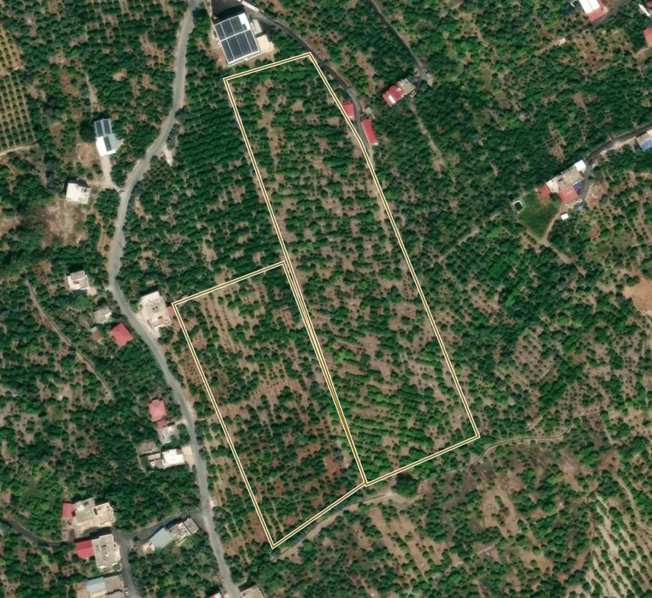

BahçeLab
Bahçeler
Asistan
İşlerim
Hizmetler
Pazar
⌕
Ara veya sor — “zayıf bölgeleri göster”
⌘K
🔔︎
◐
TK

jlnnlk
15,1 da · canlılık 0,67 · normal bantın içinde
soğuk hava
25,1 da · canlılık 0,71 · normal bantın içinde
Canlılık
Sentinel-2 · 10 m
⌄
‹
9 Eki
20 gün önce
›
⋯
Canlılık (NDVI)
0
ortanca 0,67
0,9
25 m
© Mapbox © OpenStreetMap © Maxar